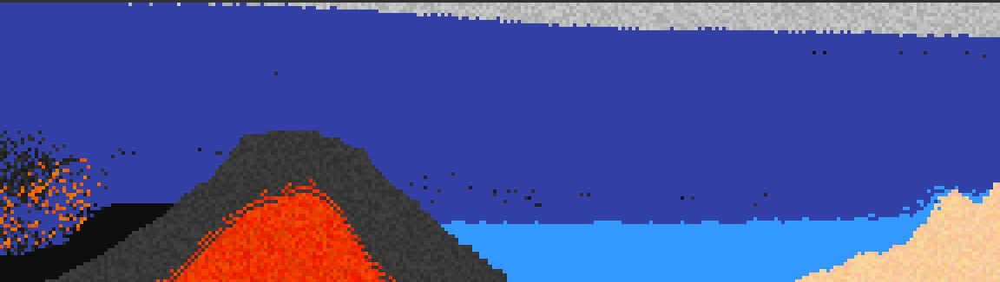

Falling elements
Contexte
Le but de ce projet personnel est de refaire un des jeux de type "Falling-sand" que l'on peut retrouver en ligne.
Ces jeux laissent l'utilisateur interagir avec différents éléments, qui peuvent produire de nombreuses réactions entre eux.
Comme le jeu ne possède pas de but à proprement parler, on appelle ce genre "bac à sable", car il permet au joueur de faire tout ce qu'il souhaite, sans aucune contrainte.
Ce type de jeu se base généralement sur un moteur utilisant des particules dans un tableau en deux dimensions.
Le plus connu de ce genre étant le Jeu de la vie de John Horton Conway.
On retrouve cependant des versions bien plus récentes et poussées comme avec le jeu Noita, sorti en 2019.
Pour réaliser ce projet j'utiliserai le langage C++ couplé à OpenGL pour la partie graphique.
Sommaire
- Afficher une grille avec OpenGL
- Concevoir les cellules et leurs caractéristiques
- Créer différents comportements
- Conclusion
- Sources
Réalisation
Afficher une grille avec OpenGL
L'avantage de ne pas utiliser un moteur de jeu préfait comme dans de précédents projets avec Unity, est de pouvoir faire une application sur mesure.
Seul les éléments nécessaires au projet seront présents, ce qui permet d'améliorer la taille du projet et ses performances.
En revanche, toutes les fonctionnalités pouvant se trouver dans un moteur préfait sont à reprogrammer, augmentant le travail à fournir.
Comme ici le seul objectif est de pouvoir afficher des couleurs sur une grille, il est acceptable de se passer d'un moteur de jeu existant.
OpenGL utilise des triangles pour afficher des couleurs sur notre écran.
Il faut donc lui fournir les trois points qui constituent chaque triangle, ainsi que leurs couleurs.
On va alors parler de "vertex". Chaque vertex, va contenir une position ainsi qu'une couleur.
Une fois les vertex définies, il faut indiquer quels vertex relier entre eux en précisant leurs indices.
Voici un schéma illustrant comment afficher un carré.
SCHEMA VERTEX 1, 2, 3, 4 ET INDICES (1,2,3) (3,4,1)
C'est en appliquant ce principe pour plusieurs carrés qu'il est possible de refaire à la main, une grille où chaque carré peut changer de couleur.
IMAGES/VIDEOS RESULTATS
Cependant, plus le nombre d'éléments dans la grille est grand, plus l'affichage mettra du temps à s'effectuer.
Pour pallier à ce soucis, il est possible d'utiliser la technique du "batch rendering".
Au lieu d'afficher chaque triangle un par un, le batch rendering va regrouper un grand nombre de surface à afficher et toutes les traiter en même temps.
Bien sûr, cette technique n'est pas magique est ne fonctionne pas pour une infinité de surfaces.
Elle permet cependant de rendre fluide l'affiche d'une centaine de millier de carrés, ce qui est difficilement réalisable sans cette technique.
Actuellement les couleurs affichées par la grille sont définies à la main. La prochaine étape est de créer la base qui va permettre de donner vie à cette grille de couleurs.
Concevoir les cellules et leurs caractéristiques
Il est donc temps de créer ces fameux "éléments". Chaque élément possèdera un ensemble de règles leurs permettant permettant de reproduire un comportement désiré.
Commençons par définir de quoi seront composées ces cellules.
Etant donné que la grille vient d'être réalisée, il parait essentiel que chaque cellule possède une couleur.
Il est également primordial d'avoir une position. Cette position sera utile pour savoir où se situe la cellule dans la grille en deux dimensions.
Pour différencier les différents états de matières, les cellules possèderont un type correspondant à "solide", "liquid" ou "gazeux".
Viens, ensuite la question de comment définir ces fameux comportements ?
Une solution serait d'utiliser le système d'héritage du langage C++, afin de créer différents types de cellules (solides, liquides, gazeuses).
Et à partir de ces grands groupes, il serait ensuite possible de sous-diviser ces grands types pour créer des éléments de manière plus précise.
Par exemple dans les solides, d'avoir des cellules, roches, sable, terre, etc...
La deuxième solution se sert du principe de composition.
En programmation orientée objet, la composition est le fait d'avoir une instance d'une classe dans une autre.
Chaque cellules possèderaient alors un objet, correspondant à un des différents comportements programmé.
Dans l'optique de généraliser au maximum les cellules, il est préférable d'opter pour la composition.
Celles-ci devraient être définies par ce qui les composent, et non pas par une hiérarchisation entre différentes classes.
Cela permet d'avoir de nouveaux types de cellules, tirants leurs propriétés de différents types existant, favorisant ainsi la création de comportements émergeant.
Il est à noter que les cellules ne possèdent pour l'instant que peu de caractéristiques, mais de nouvelles en seront rajoutées au fur et à mesure que le projet avance.
Pour utiliser son comportement, il faut qu'une cellule sache quelle méthode appeller et ce, quel que soit le comportement qu'elle possède.
Autrement dit, le nom de la méthode doit rester le même malgré ses différentes implémentations possibles.
Utiliser le système d'interface du langage C++ est donc très pratique pour créer différents types de comportements.
Une interface permet de désigner un ensemble de fonctionnalités sans implémentation.
Ces fonctionnalités seront uniquement définies par les classes dérivées.
Toutes les cellules doivent posséder un membre IThermicBehavior
. La méthodeupdatepermet à chaque cellule d'utiliser sa fonction de mouvement implémentée par une classe héritant de IMovementBehavior.
Pour commencer à implémenter un premier comportement de déplacement, le sable est idéal car son fonctionnement est simple.
En grande quantité, le sable doit former des dunes.
Pour cela il doit non seulement subir l'effet de la gravité mais également celui du glissement lorsqu'il est en pente.
Ces conditions appliquées à notre grille en deux-dimensions se résument avec ce schéma.
Précisions techniques
Pour que le comportement d'une cellule puisse modifier les informations de celle-ci (par exemple sa position), il est nécessaire de lui fournir une référence de la cellule à sa création.
Il en est de même pour le tableau de cellules. Pour que le comportement puisse analyser les cellules voisines, il faut qu'il ait un accès au tableau et à ses dimensions.
Voici le code correspondant au comportement du sable.
void SandMovement::update()
{
_target = nullptr; // Cell pointer
_x = _cell->getPosition().x;
_y = _cell->getPosition().y;
if (_y < _cell->getHeight() - 1) // Don't check out of arrays bounds
{
checkBelowCell();
if (targetFound() == false)
{
_random = (rand() % 2) * 2 - 1; // Randomly generate +1 or -1
checkAdjacentBelowCells();
}
if (targetFound() == true)
_cell->swapCell(*_target);
}
}
La première étape sert à récupérer la position de la cellule actuelle mais également à initialiser la cellule "cible" comme non-trouvée.
Après avoir fait attention à ce que la cellule ne soit pas déjà tout en bas de la grille, le comportement vérifie si la cellule juste en dessous peut servir de cible.
Si ce n'est pas le cas, il vérifie ensuite les cellules en bas à droite et gauche (dans un autre aléatoire).
Enfin, si une des cellules scrutée remplie toutes les conditions, celle-ci sera intervertie avec la cellule actuelle.
Voici la définition des méthodes utilisées par le code précédent.
void SandMovement::checkBelowCell()
{
if (_cells[_y + 1][_x].getType() < CellType:::Solid)
_target = &(_cells[_y + 1][_x]);
}
void SandMovement::checkAdjacentBelowCells()
{
int x1 = _x + _random;
int x2 = _x - _random;
if (x1 >= 0 && x < _cell->getWidth() && _cells[_y + 1][x1].getType() < CellType::Solid)
_target = &(_cells[_y + 1][x1]);
else if (x2 >= 0 && x2 < _cell->getWidth() && _cells[_y + 1][x2].getType() < CellType::Solid)
_target = &(_cells[_y + 1][x2]);
} const bool SandMovement::targetFound()
{
return _target != nullptr;
}
Pour qu'une cellule soit une cible valide, il faut que son type soit "inférieur" à celui de la cellule actuelle, autrement dit, inférieur au type "solide".
C'est l'utilisation des énumérations de C++ qui rend l'opération inférieur possible.
La première valeur a avoir été déclarée dans l'énumération est l'état "gazeux", cette valeur est donc associée à la valeur numérique 0.
Suivant le même principe, l'état "liquide" est associée à un et l'état "solide" à deux.
Au lancement de l'application, toutes les cellules seront par défaut de type "gazeuse" et auront un mouvement les rendant statiques.
Voici une démonstration vidéo du comportement de mouvement implémenté à l'instant.
Le sable possède le comportement attendu mais il y a quelque chose de surprenant dans cette démonstration.
Impossible de le voir tomber, dès que celui-ci est placé, il tombe instantanément au sol.
Ce problème vient de la manière dont les cellules sont actualisée.
Actuellement, pour chaque actualisation le programme va parcourir toutes les cellules et déclencher leur méthode update.
Pour parcourir les cellules, le programme commence par la position (0, 0) qui est en haut à gauche et va se diriger vers la fin de la ligne avant de passer à la suivante.
Cependant si une cellule se déplace, elle risque de se faire actualiser plus d'une fois par le programme.
Il y a plusieurs solutions pour pallier à ce soucis
La première consiste à mettre à jour les cellules en commençant par le bas.
Impossible pour les cellules qui tombent de se faire mettre à jour plusieurs fois.
En revanche le problème sera le même pour des mouvements faisant aller les cellules vers le haut.
Une deuxième solution serait de ne pas effectuer de changement sur le tableau en cours avant d'avoir mis à jour toutes les cellules. Cette technique requiert un second tableau, (doublant la taille de notre programme à son éxécution). De plus, il y a des risques de conflits dans le cas où deux cellules devraient se déplacer au meme endroit.PHOTO CONFLIT
La dernière possibilité consiste à vérifier si la cellule à déjà été actualisée et de continuer à itérer sur le tableau,
tant que toutes les cellules n'ont pas été mises à jour.
Loin d'être la plus optimisée l'avantage de cette technique est sa simplicité de mise en place.
Il suffit de rajouter un booléen aux cellules qui est vérifiée avant de mettre à jour la cellule.
Une fois toutes les cellules actualisées, leur booléen est remis à zéro.
Le résultat est bien mieux que précédemment.
Il y a cependant un comportement étrange lorsque le sable est remplacé par du vide.
Le sable plus en hauteur s'affaisse toujours du même côté.
A savoir le côté gauche.
Le problème vient encore une fois de la manière dont sont mises à jour les cellules.
Malgré le fait qu'il n'y ait plus de multiples actualisation pour une même cellule, le programme actualise toujours les cellules de gauche à droite et ligne par ligne.
Ainsi, pour obtenir un résultat un peu plus chaotique, il faut actualiser toutes les cellules de la même ligne dans un ordre aléatoire.
Plutôt que de générer une séquence aléatoire à chaque mise à jour de l'application (ce qui serait très couteuk), il est possible d'en créer une multitude au lancement du programme, et d'alterner entre ces différentes séquences à chaque mise à jour.
Chaque séquence sera contenue dand un tableau dynamique (vecteur de C++) et toutes les séquences seront stockées dans un tableau.
Voici le code pour générer un nombre N de séquences contenant des nombres allant de 0 à la largeur de la grille.
void Application::generateRandomSets(const int& N)
{
_randomSets = new std::vector[N];
for (int i = 0; i < N; i++) // For each set
for (int j = 0; j < CELL_WIDTH; j++) // Fill with numbers from 0 to CELL_WIDTH
_randomSets[i].push_back(j);
// Shuffle numbers in sets
auto rng = std::default_random_engine {};
for (int i = 0; i < N; i++)
std::shuffle(_randomSets[i].begin(), _randomSets[i].end(), rng);
}
Cette méthode va d'abord remplir tous les vecteurs avec les nombres dans l'ordre.
Puis avec l'usage de la librairie standard, elle va ensuite mélanger le contenu afin d'avoir une multitude de séquences aléatoires.
Ainsi au lieu de parcourir les cellules de gauche à droite, il faut maintenant utiliser les nombres de la séquence actuelle en tant qu'indice.